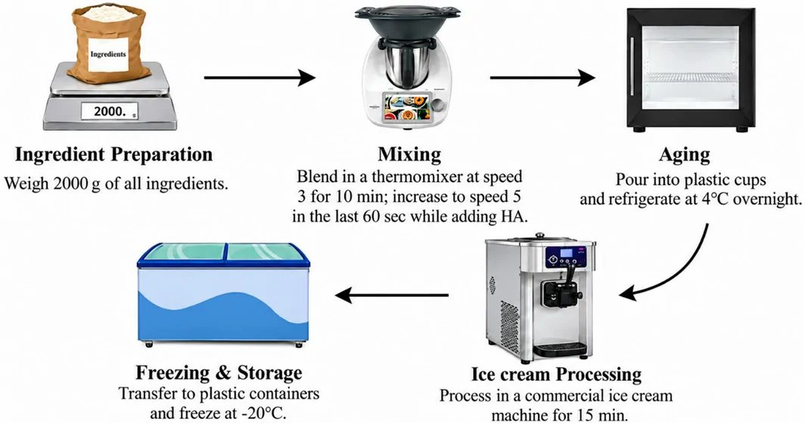
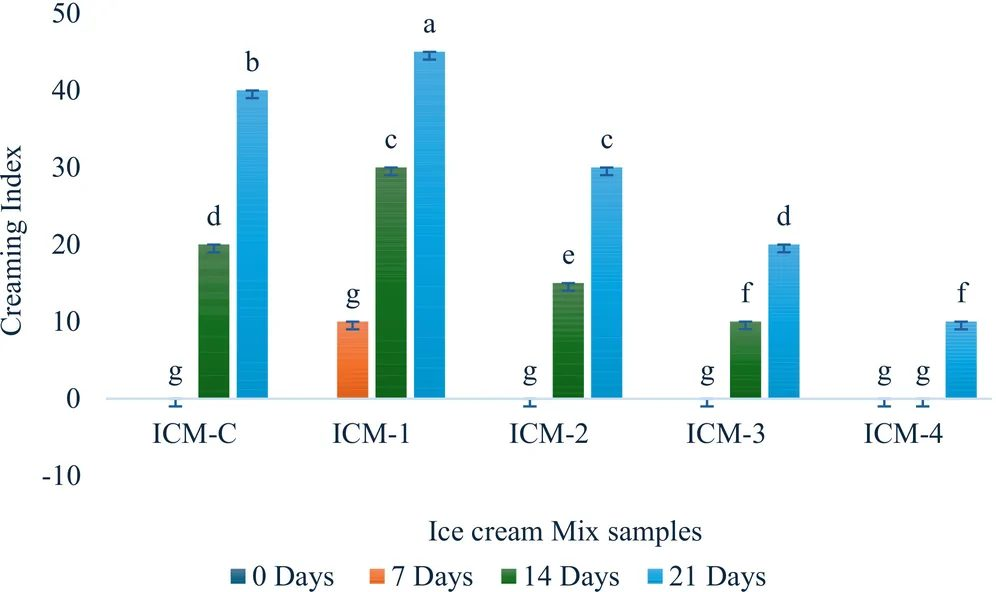
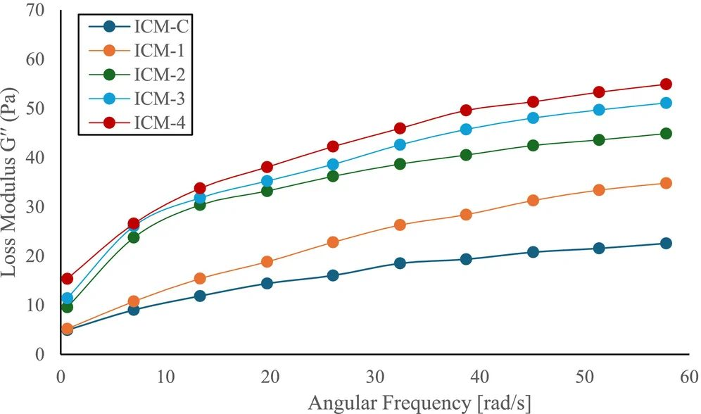
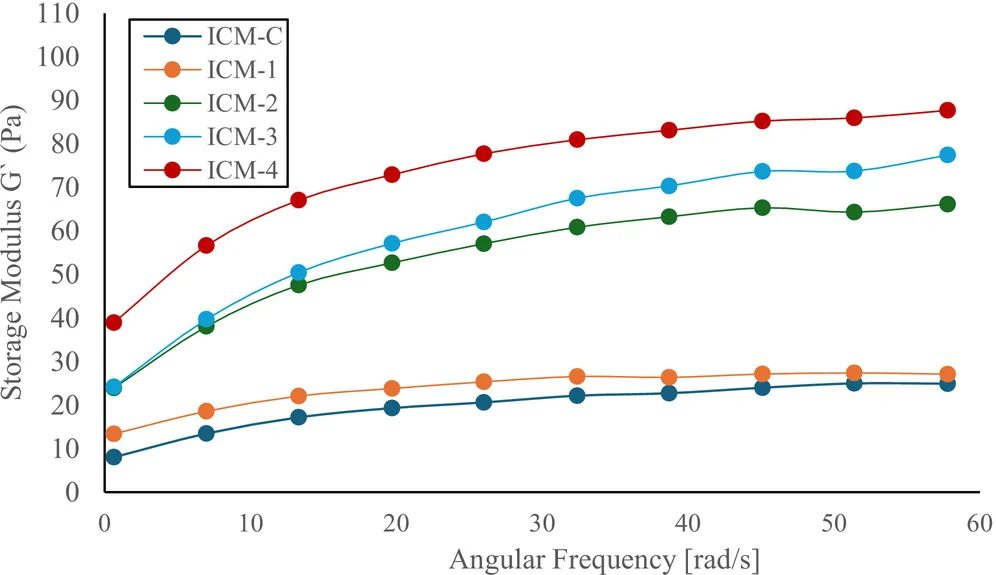
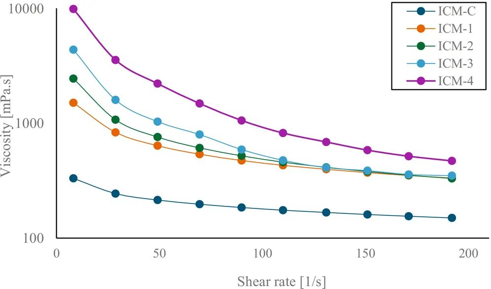
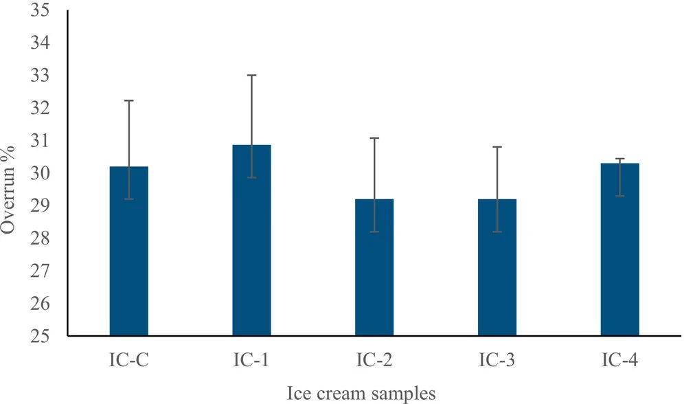
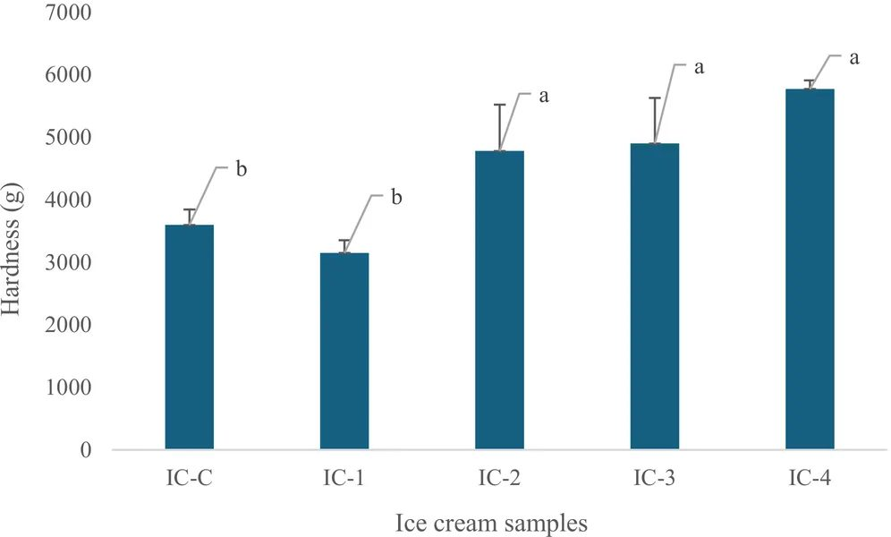
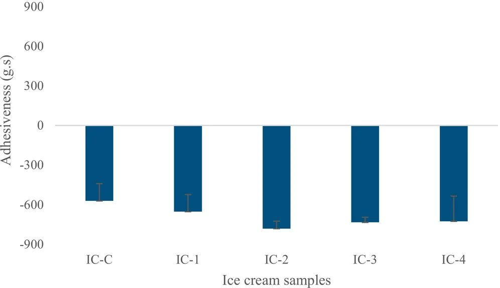
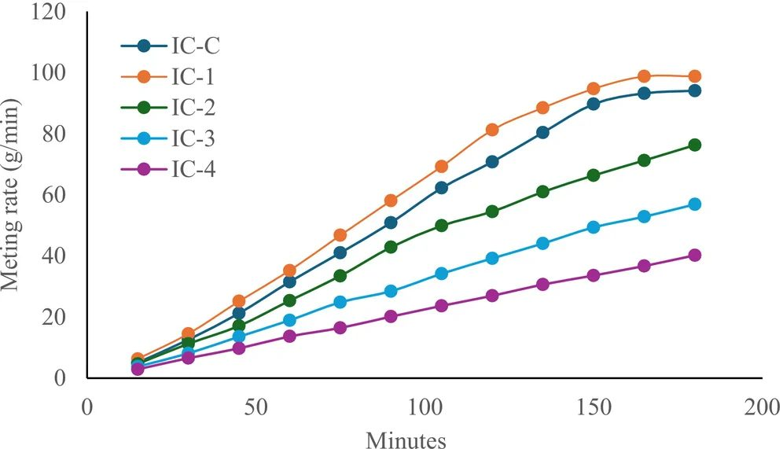

Гиалуроновая кислота в мороженом: как молекулярный вес меняет текстуру десерта


Исследователи изучили влияние гиалуроновой кислоты (ГК) разной молекулярной массы на свойства мороженого. Выяснилось, что полимеры с массой 1550 и 2550 кДа значительно улучшают стабильность смеси и вязкость продукта. Хотя ГК не заменяет полностью эмульгаторы, она открывает новые возможности для создания текстурированных десертов.
Главное
- Высокомолекулярная ГК (от 1550 кДа) повышает вязкость и стабильность смеси.
- ГК эффективно удерживает влагу, предотвращая расслоение эмульсии.
- Использование ГК влияет на скорость таяния, но не меняет объем взбитости.
Подробнее
В эксперименте использовали гиалуроновую кислоту с молекулярной массой 320, 980, 1550 и 2550 кДа в концентрации 0,3%. Образцы сравнивали с контрольной смесью, содержащей стандартный промышленный стабилизатор (гуаровая камедь, каррагинан, моно- и диглицериды). Реологические тесты на реометре Anton Paar при 4°C показали, что с ростом молекулярной массы ГК увеличиваются модуль накопления (G'), модуль потерь (G'') и кажущаяся вязкость смеси.
Анализ стабильности показал, что высокомолекулярная ГК (1550–2550 кДа) эффективно снижает индекс кремообразования (Creaming Index) в течение 21 дня хранения при 4°C. При этом скорость таяния образцов с высокой молекулярной массой оказалась выше, чем у контроля. Важно отметить, что все образцы с ГК не содержали дополнительных эмульгаторов, в отличие от контрольного состава, что делает результаты показательными для оценки функциональности самого полимера.
Ограничения
Исследование не доказывает возможность полной замены промышленных эмульгаторов, так как контрольный образец имел иной состав.
Полный перевод статьи
Резюме
Мороженое — один из самых популярных молочных десертов в мире, ценимый за нежную текстуру, насыщенный вкус и освежающие свойства. Несмотря на широкое потребление, производство высококачественного мороженого сопряжено с рядом технических сложностей. Одной из них остается поддержание стабильной структуры, желаемой текстуры и постоянных сенсорных свойств на протяжении всего срока годности. Это обусловлено сложной природой продукта: частично замороженной эмульсией, содержащей воздушные ячейки, жировые глобулы, кристаллы льда и непрерывную водную фазу. Рецептура должна быть тщательно разработана для контроля перекристаллизации льда, поведения при таянии и структурной стабильности во время замораживания, хранения и транспортировки. Для решения этих задач в состав мороженого обычно вводят стабилизаторы на основе полисахаридов, которые контролируют миграцию влаги, подавляют перекристаллизацию льда и улучшают общую текстуру. Широко используемые стабилизаторы, такие как гуаровая камедь, каррагинан, камедь рожкового дерева и карбоксиметилцеллюлоза (КМЦ), улучшают вязкость и стабильность при циклах замораживания-оттаивания. Однако, в зависимости от концентрации и взаимодействия с другими ингредиентами, они могут придавать нежелательные характеристики, например, чрезмерную «резиновость». Это вызывает интерес к альтернативным полисахаридам, способным обеспечить функциональность при сохранении сенсорных свойств.
Гиалуроновая кислота (ГК) рассматривается как потенциальный функциональный ингредиент благодаря высокой способности связывать воду. В молочных продуктах, таких как молоко и плавленый сыр, ГК повышает влагоудерживающую способность и влияет на структурные свойства. Предыдущие исследования указывают, что ГК может улучшать стабильность эмульсии и взаимодействие белков в молочных системах. ГК — это линейный полисахарид, состоящий из повторяющихся дисахаридных звеньев β-1,4-D-глюкуроновой кислоты и β-1,3-N-ацетил-D-глюкозамина. Высокая плотность отрицательного заряда позволяет ей связывать большие объемы воды и формировать вязкие системы. Важной характеристикой ГК является зависимость функциональности от молекулярной массы (ММ). Коммерческая ГК доступна в диапазоне от нескольких кДа до более 3000 кДа: ГК с высокой ММ обычно ассоциируется с повышенной вязкостью и выраженным вязкоупругим поведением, тогда как низкомолекулярная ГК вносит ограниченный структурный вклад.
Важно
Гиалуроновая кислота с высокой молекулярной массой (≥ 980 кДа) улучшает вязкость и стабильность молочных систем благодаря способности связывать воду.
Пояснение
Вязкоупругость — способность материала проявлять свойства как твердого тела (упругость), так и жидкости (вязкость), что критично для «тела» мороженого.
На данный момент FDA (США) не одобрило ГК как общую пищевую добавку для всех категорий продуктов, однако она разрешена в Японии, Южной Корее, Китае и ряде стран ЕС. Целью данного исследования была оценка влияния ГК различной молекулярной массы на физико-химические, реологические и текстурные свойства мороженого при использовании в качестве стабилизатора, без прямой демонстрации полной замены традиционных систем «стабилизатор-эмульгатор».
Исследование оценивало влияние ГК различной ММ (320 кДа, 980 кДа, 1550 кДа и 2550 кДа) при замене традиционных стабилизаторов. Контрольный образец (IC-C) содержал стандартную смесь стабилизаторов (0,3%). Образцы IC-1, IC-2, IC-3 и IC-4 содержали 0,3% ГК соответствующей ММ.
Базовая смесь включала 33,92% сливок, 41,8% обезжиренного молока, 5,89% сухого обезжиренного молока (СОМ), 14,8% сахара и 3,29% сухого кукурузного сиропа. В контроле использовали 0,3% коммерческого стабилизатора (смесь гуаровой камеди, моно- и диглицеридов, камеди рожкового дерева, каррагинана и полисорбата 80). В опытных образцах использовали только ГК (0,3%) без добавления эмульгаторов. Итоговый состав: 12,2% жира, 4,1% белка, 11,2% СОМ, 41,8% сухих веществ.
Осторожно
Контрольный образец содержал эмульгаторы, а образцы с ГК — нет. Различия в свойствах могут быть обусловлены как типом стабилизатора, так и отсутствием эмульгаторов в опытных группах.
Ингредиенты смешивали в термомиксере (10 мин, скорость 3, последние 60 с — скорость 5). Смесь пастеризовали при 85°C в течение 20 с, затем «старили» при 4°C в течение 12–16 ч. Замораживание проводили в батч-фризере в течение 15 мин, закаливание — при -20°C в течение 24 ч.
Стабильность к кремообразованию (CI) определяли по индексу разделения фаз при хранении (4°C, 21 день). Реологические характеристики (модуль накопления G', модуль потерь G'', вязкость) измеряли на реометре при 4°C в диапазоне угловых частот 0,1–62,8 рад/с.
Взбитость (overrun) рассчитывали по разнице веса смеси и готового продукта. Твердость и адгезивность измеряли методом пенетрации (глубина 3 мм, температура -20°C). Скорость таяния определяли по потере массы образца (100 г) при 25°C в течение 3 ч.
Пояснение
Взбитость (overrun) — показатель объема воздуха, включенного в мороженое; чем выше значение, тем «легче» продукт.
Контроль и IC-1 (320 кДа) имели более низкую вязкость и проявляли признаки разделения фаз при старении, в отличие от образцов с ГК более высокой ММ.
Все образцы показали рост CI за 21 день. Контроль и IC-1 имели самые высокие значения CI (>40%), свидетельствующие о нестабильности. Образцы с ГК 1550 кДа и 2550 кДа показали минимальное разделение фаз.
Наблюдалась прямая зависимость: с ростом ММ ГК увеличивались G', G'' и кажущаяся вязкость. Образец ICM-4 (2550 кДа) показал наибольшую вязкость и сопротивление течению.
Важно
ГК с высокой ММ (2550 кДа) обеспечивает наиболее стабильную и вязкую структуру смеси, что коррелирует с лучшей устойчивостью к расслоению.
Значимых различий (p > 0,05) между образцами не выявлено (диапазон 29,20–30,86%). Добавление ГК не препятствовало включению воздуха.
Образцы с ГК ≥ 980 кДа были значительно тверже контроля и IC-1. Различий в адгезивности между образцами не выявлено.
Образцы с ГК 1550 кДа и 2550 кДа таяли медленнее, чем контроль и IC-1, что указывает на лучшую термостойкость структуры.
ГК с ММ ≥ 980 кДа улучшает твердость, вязкость, стабильность эмульсии и термостойкость мороженого. Однако из-за отсутствия эмульгаторов в опытных образцах результаты не означают полную эквивалентность традиционным системам. Требуются дополнительные исследования с учетом микроструктурного и сенсорного анализа.
Гиалуроновая кислота (особенно 1550 и 2550 кДа) является перспективным структурообразователем для мороженого, улучшающим физико-химические свойства. Для полноценной замены традиционных стабилизаторов-эмульгаторов необходимы дальнейшие исследования с сопоставимыми рецептурами.
















Схема исследования
Статья опубликована в рецензируемом журнале Food science & nutrition. Но и опубликованный результат — одно исследование, а не окончательный вывод.
Источник
| Источник | Категория | Лицензия |
|---|---|---|
| Food science & nutrition (Europe PMC) | emulsifiers | CC BY 4.0 |
Источники
| Источник | Ссылка |
|---|---|
| Страница статьи | europepmc.org |
| Полный текст (PDF) | europepmc.org |
| DOI | doi.org |
| Метаданные Crossref | api.crossref.org |
| Europe PMC | europepmc.org |
| Иллюстрация | commons.wikimedia.org |